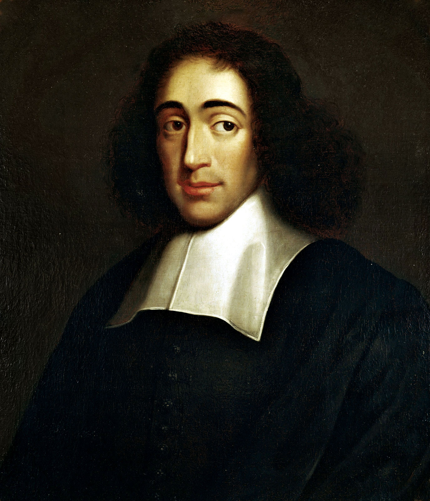

'내일 지구가 멸망해도 사과나무를 심겠다'는 누구의 말일까? — 주인을 잃은 명언들의 진짜 출처
"내일 지구가 멸망할지라도 나는 오늘 한 그루의 사과나무를 심겠다." — 스피노자
졸업식 축사에서, 신년사에서, 회사 게시판의 액자에서 이 문장을 보셨을 겁니다. 이름도 늘 같이 붙어 있습니다. 철학자 스피노자. 절망 앞에서도 할 일을 하는 사람의 품위를 이만큼 짧게 말한 문장도 드뭅니다.
그런데 독일에 가면 이 문장의 주인이 바뀝니다. 그곳에서는 종교개혁가 마르틴 루터의 말로 통합니다. 그리고 루터의 글을 다 뒤져도 이 문장은 나오지 않습니다.

그리고 결정적으로 — 이 문장은 스피노자의 것도, 루터의 것도 아닙니다.
이 글은 좋은 문장 끝에 유명한 이름을 붙여 인용해 온 분들을 위해 씁니다. 결론부터 말씀드리면, 우리가 아는 명언 가운데 상당수는 주인이 없거나 다른 사람의 것입니다. 유명인의 말이 아닌 문장이 유명인의 이름을 달고 퍼지는 현상을 오인용(Misattribution)이라고 부릅니다. 사과나무 한 그루에서 시작해, 아인슈타인의 '컴퓨터' 명언까지 주인을 잃은 문장들을 모아 봤습니다.
사과나무가 걸어온 길
독일 개신교 매체의 한 목사는 2017년 글에서 이 문장을 두고 '루터의 말로 여겨지지만 어디에도 근거가 없는 인용문'이라고 적었습니다[1]. 같은 해 독일의 한 교회 소식지는 조금 더 구체적으로 씁니다. 이 문장은 루터의 말로 알려져 있지만, 확인되는 첫 기록은 1944년 10월 헤센 지방 고백교회의 회람 편지라는 것입니다. 나라는 폐허였고 사람들은 익숙한 세계가 무너지는 것을 보고 있었다고, 그래서 그 말이 그 시대에 꼭 맞았다고 덧붙입니다[2].
루터가 세상을 떠난 것은 1546년입니다[3]. 스피노자는 그보다 뒤인 1677년에 세상을 떠났습니다[4]. 그 뒤 4백 년 가까이 이 문장은 기록에 없다가, 2차대전이 끝나 가던 해 갑자기 '루터의 말'로 나타난 셈입니다. 독일에는 이 한 문장의 내력만 다룬 연구서가 따로 있을 정도입니다. 마르틴 슐뢰만의 『루터의 사과나무?』(1994)입니다[5].
그렇다면 스피노자는 어디서 왔을까요. 이 문장은 독일어권에서 처음부터 루터의 이름으로 돌았고, 스피노자의 이름이 붙을 근거는 이번에 찾지 못했습니다. 언제 어떤 경로로 한국에서 스피노자의 말이 됐는지도 확인할 수 없었습니다. 한 사람에게서 다른 사람으로, 이름만 갈아 끼우며 건너온 것입니다.
주인을 잃은 명언들
사과나무만의 일이 아닙니다. 인터넷과 강연에서 자주 보이는 명언 몇 개를 같은 방식으로 따라가 봤습니다.
| 명언 | 흔히 붙는 이름 | 실제로 확인되는 것 |
|---|---|---|
| "컴퓨터는 믿을 수 없이 빠르고, 정확하며, 멍청하다. 사람은 매우 느리고, 부정확하며, 뛰어나다. 둘이 힘을 합치면 상상할 수 없는 힘을 갖는다." | 아인슈타인 | 아인슈타인의 말이라는 근거가 없습니다. 비슷한 문장이 1977년 레오 체른이라는 사람의 이름으로 보이지만, 처음 쓴 사람은 아직 확정되지 않았습니다[6]. |
| "기술이 인간관계를 넘어서는 날이 두렵다. 세상은 바보들의 세대를 갖게 될 것이다." | 아인슈타인 | 그가 이렇게 말했다는 기록은 없고, 2012년 인터넷에서 처음 보입니다. 1995년 영화 〈파우더〉의 대사와 닮았다는 지적이 있습니다[7]. |
| "미친 짓이란 같은 일을 반복하면서 다른 결과를 기대하는 것이다." | 아인슈타인 | 뒷받침할 증거가 없습니다. 비슷한 말은 1981년 중독 회복 모임들의 자료에서 처음 보입니다. 프린스턴 대학 출판부의 아인슈타인 어록집은 이 문장을 '잘못 귀속된 말'에 넣었습니다[8]. |
| "살아남는 것은 가장 강한 종도, 가장 똑똑한 종도 아니다. 변화에 가장 잘 적응하는 종이다." | 다윈 | 1963년 루이지애나 주립대의 경영학 교수 리언 메긴슨이 『종의 기원』을 자기 말로 풀어 쓴 문장입니다. 인용 부호도 없던 의역이 어느새 다윈의 원문처럼 굳었습니다[9]. |
| "나는 당신의 말에 반대한다. 그러나 당신이 그 말을 할 권리는 목숨 걸고 지키겠다." | 볼테르 | 1906년 작가 에벌린 비어트리스 홀이 S. G. 탤런타이어라는 필명으로 낸 책에서 볼테르의 태도를 요약해 쓴 문장입니다[10]. |
| "악법도 법이다." | 소크라테스 | 그런 말을 했다는 기록이 없습니다. 앞선 글에서 자세히 다뤘습니다. |
이름은 어떻게 옮겨 붙나
사례들을 나란히 놓으면 이름이 옮겨 붙는 길이 몇 갈래로 보입니다. 다윈과 볼테르의 경우는 누군가 자기 말로 풀어 쓴 요약이 인용 부호를 얻으면서 원문이 됐습니다. 홀은 훗날 그 문장을 두고 이렇게 해명했습니다.
그것은 내 표현이며, 인용 부호 안에 넣지 말았어야 했다.
— 에벌린 비어트리스 홀, 1939년 편지, Quote Investigator에서 재인용 (번역)[10]
사과나무와 '미친 짓' 명언은 다른 길을 걸었습니다. 주인 없이 돌던 격언에 더 유명한 이름이 붙었습니다. 영화 대사가 과학자의 말로 둔갑한 '바보 세대'는 세 번째 길입니다. 어느 길이든 끝은 같습니다. 문장은 남고, 처음 쓴 사람은 지워지고, 그 자리에 가장 그럴듯한 이름이 앉습니다.
인용하기 전에 세 가지만
무분별한 인용이 문제인 것은 틀린 이름 하나 때문만이 아닙니다. 확인하지 않은 인용은 남의 신용을 빌려 쓰는 일이고, 그 문장을 처음 쓴 사람의 몫을 지우는 일이기도 합니다. 복잡한 방법은 필요 없습니다.
- 어디에 썼는가 — 그 사람의 어느 책, 어느 편지, 몇 쪽인지 말할 수 있어야 합니다. 출처가 '인터넷'이나 '명언집'뿐이면 확인되지 않은 것입니다.
- 언제 처음 나왔는가 — 그 사람이 죽은 지 한참 뒤에야 처음 보인다면 의심해야 합니다. 사과나무는 4백 년 가까이 지나서, '바보 세대'는 2012년에야 인터넷에 처음 나타났습니다.
- 확인되지 않으면 이름을 뗀다 — 좋은 문장이라면 이름 없이도 좋습니다. "이런 말이 있습니다"라고 쓰면 됩니다.
이런 추적을 전문으로 하는 곳들도 있습니다. 이 글이 기댄 인용 추적 사이트 Quote Investigator나 팩트체크 기관 Full Fact 같은 곳에 먼저 검색해 보는 것만으로도 상당수는 걸러집니다[7][8].
필자 한마디
틀린 인용을 써 왔다고 해서 부끄러워할 일은 아닙니다. 그 문장들은 그만큼 잘 만들어진 문장이니까요.
"좋은 문장은 이름 없이도 좋습니다." 유명한 이름을 붙이는 순간, 우리는 문장 대신 이름에 기대게 됩니다. 확인되지 않은 이름을 떼어 내면, 문장은 오히려 제 힘으로 서게 됩니다.
1944년 폐허가 된 독일에서 누군가 그 사과나무를 처음 적었습니다. 그 사람의 이름을 우리는 모릅니다. 그래도 그 문장은 여든 해 넘게 사람들을 붙들어 왔습니다.
정리하자면 이렇습니다. '내일 지구가 멸망해도 사과나무를 심겠다'는 스피노자의 글에도 루터의 글에도 없고, 확인되는 첫 기록은 1944년 독일의 회람 편지입니다. 아인슈타인의 '컴퓨터'와 '바보 세대', 다윈의 '적응', 볼테르의 '권리'도 모두 남의 문장이거나 주인 없는 문장이었습니다. 인용 전에 어디에, 언제 처음 나왔는지만 물어도 대부분은 걸러집니다.
오늘 마음에 드는 명언을 보면 한 번 물어보세요. 그 사람은 그 말을 어디에 썼을까요.
이 글은 일반적인 정보 제공을 위한 것입니다. 명언의 출처 연구는 새 기록이 나오면 바뀔 수 있으니, 인용하실 때는 원전과 최신 조사를 함께 확인하세요.
참고문헌
- Kuschel, H. Luther-Boom. evangelisch.de 블로그 「stilvoll glauben」, 2017-10-10. 링크 ↩
- 독일 개신교 교회 소식지(Gemeindebrief) 2017년 11월~2018년 2월호, 본 대학 도서관 납본 자료(PDF). 링크 ↩
- WIST Quotations. Luther, Martin (1483–1546) — "If I knew the world should go under tomorrow…" (Attributed). 링크 ↩
- Britannica. Benedict de Spinoza 요약(1632–1677). 링크 ↩
- Schloemann, M. Luthers Apfelbäumchen? Ein Kapitel deutscher Mentalitätsgeschichte seit dem Zweiten Weltkrieg. Vandenhoeck & Ruprecht, 1994 (도서 목록). 링크 ↩
- Shoemate, B. Einstein never said that…. Medium (블로그). 링크 ↩
- Turnnidge, S. Einstein didn't say technology would create 'generation of idiots'. Full Fact, 2021-07-30. 링크 ↩
- Quote Investigator. Insanity Is Doing the Same Thing Over and Over Again and Expecting Different Results, 2017-03-23. 링크 ↩
- Darwin Correspondence Project(케임브리지 대학). The evolution of a misquotation. 링크 ↩
- Quote Investigator. I Disapprove of What You Say, But I Will Defend to the Death Your Right to Say It, 2015-06-01. 링크 ↩